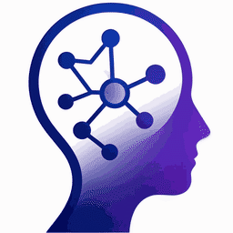
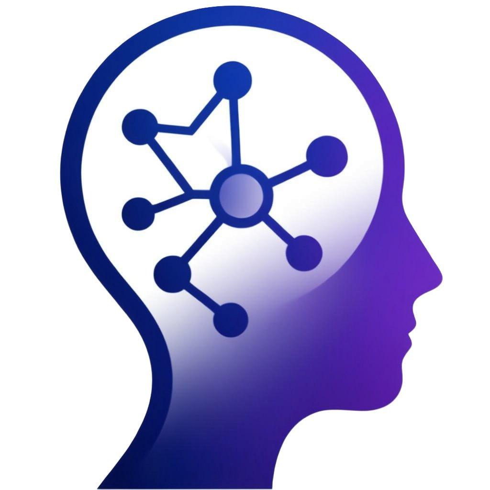

Lvmyth
AI
🌙

精选优质 AI 工具与核心技术术语
🕒 更新于
--
📖 AI 术语
♠
国内工具
Domestic
0 tools
♥
国外工具
International
0 tools
加载AI动态
↕ 默认排序
🔤 名称 A→Z
🔡 名称 Z→A
🆕 最近添加
⭐ 收藏
🕘 最近
✕ 清除筛选
×
📖
前往使用 →
🛠️ AI 工具
📖 名词解释
🌐 全部
🇨🇳 国内
🌍 国外
×
📋 全部
⭐ 收藏
0
🕘 最近
全部
🔓 开源
🔍
没有找到匹配的工具，试试换个关键词？
By Lvmyth AI
✉️
Email
📝
Blog
点击任意位置关闭